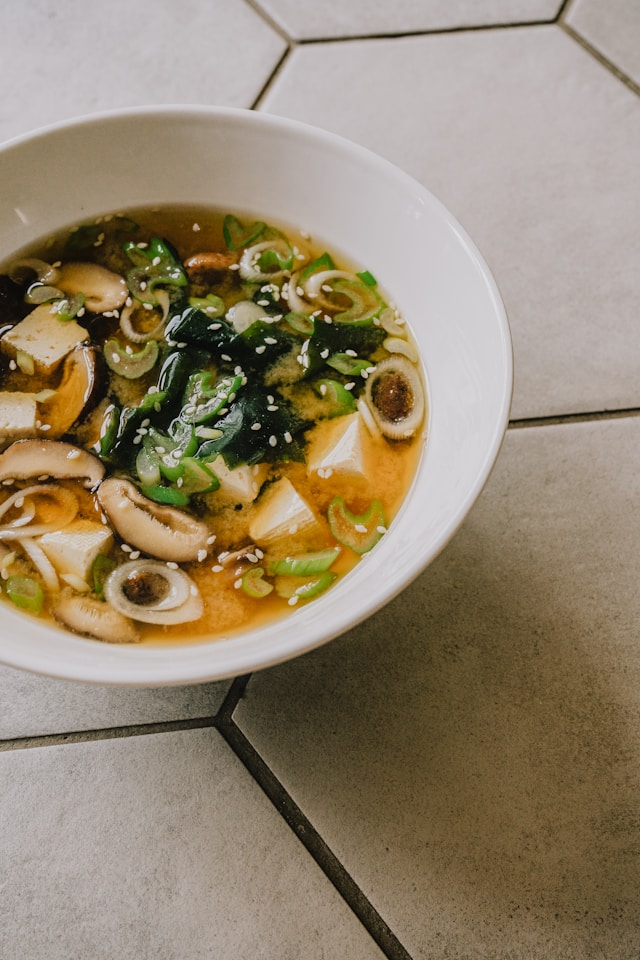

Mushroom Bok Choy Soup Recipe
Home

Description
This recipe includes mushrooms, bok choy, ginger and garlic.
Ingredients
- 1/4 cup unsalted butter
- 1 pound white and cremini mushrooms, cut into quarters
- 1 head bok choy, chopped plus extra green leaves for garnish
- 4 green onions, sliced
- 2 tablespoons minced garlic, or more to taste
- 8 slices fresh ginger, quartered
- 1/4 cup lime juice
- 7 cups chicken broth
- 1/2 cup chopped fresh cilantro
Steps
- Gather all ingredients.
- Heat butter in a stockpot over medium heat. Add mushrooms, bok choy, green onions, garlic, and ginger. Sprinkle mushroom mixture with lime juice, then cook and stir just until slightly browned, 2 to 3 minutes.
- Ladle into bowls and garnish with cilantro and green bok choy leaves.